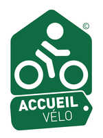

La Via Romea Francigena : plus de 230 km d'itinéraire vélo du Nord de la France à la Belgique
Dans le nord de la France, la véloroute suit d’abord les nombreux canaux
artificiels et marais de Calais
jusqu’à Saint-Omer. Charmante ville au riche patrimoine architectural et aux nombreuses rues piétonnes,
Saint-Omer est situé au cœur du marais audomarois. L’itinéraire se dirige ensuite le bassin minier du
Nord-Pas-de-Calais, classé au patrimoine mondial de l’Unesco.
Vous traverserez alors une région et des paysages profondément marqués par son
passé d’industrie minière.
La suite du parcours vous amènera à Lille, ancienne plateforme marchande des Flandres et de l’Europe.
Laissez-vous charmer par les maisons de brique rouge du XVIIe siècle et la Grand’Place centrale de cette
« Ville d’Art et d’Histoire ». Vous pédalerez ensuite au bord du paisible canal de Roubaix jusqu’à la
frontière belge.

Trouver mon Accueil vélo
Accueil Vélo est une marque qui garantit des services de qualité auprés des cyclistes le long de
l'itinéraire
Il.Elle.s l'ont fait !
En solo, entre ami.e.s ou en famille, il.elle.s ont parcouru la Via Romea
Francigena en entier ou en
partie,
retrouvez leurs coups de coeur et leur conseils !
Les derniers avis publiés !
Les avis et commentaires de voyageurs à vélo sur nos parcours.
N'hésitez pas à déposer le votre sur les tracés que vous avez déjà parcourus !
ven 27/08/2021 - 18:26
sandie
Rostrenen / Mûr-de-Bretagne
En famille
Ça monte pour arriver au lac de Guerlédan mais ça se fait en roulant
tranquillement.
mer 11/08/2021 - 09:00
Nathalie
Blain / Nort-sur-Erdre
Balade à vélo
Balade facile et sécurisée sur le chemin de halage. Étape faite à vélo avec notre
chien sans danger de route pour lui.
Jolie pause aux écluses lors du passage des bateaux
lun 16/08/2021 - 07:24
Patrick
Redon / Blain
Les Touche-a-Tout
Pour éblouir vos papilles, ne manquez surtout pas de faire une pause aux
Touche-à-Tout,
écluse de la Touche, entre Guenrouët et Blain (à 10km de Guenrouët).
Un endroit merveilleux au bord de la piste, pour les cyclistes, avec un excellent accueil et des
produits du jardin.
Les plats y sont très originaux, naturels et exquis.
Partez en voyage, ils organisent tout pour vous !
Pas envie d'organiser vos vacances ? Premier voyage à vélo ? Des voyages
spécialisées vélo vous
proposent des séjours clés en main. Partez serein et l'esprit libre.